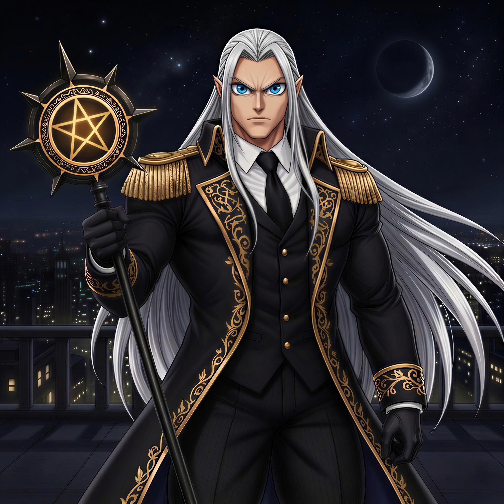

Vilões Recorrentes
Deadlock

Idade: 54 anos
História: Magnus Sterling Nyx nasceu na Inglaterra e, ainda adolescente, integrou o Esquadrão Grey Ledger, onde foi submetido a experimentos militares que lhe concederam força e resistência sobre-humanas. Durante uma missão encoberta, foi abandonado pelos próprios comandantes para encobrir interesses políticos, passando a enxergar governos e heróis como estruturas corruptas e frágeis. Após sobreviver, abandonou sua antiga identidade e tornou-se Deadlock, um estrategista frio e manipulador obcecado por impor ordem absoluta ao mundo através do controle total. Anos depois, ao descobrir a genialidade de Aria Bastos, armou o ataque robótico a Campo Solaris e a adotou após a tragédia, treinando-a como uma combatente de elite e mente estratégica para seu império. Porém, aos 20 anos, Aria descobriu a verdade sobre seu passado e o abandonou, tornando-se sua maior falha. Hoje, ao lado de sua misteriosa mordoma Glockenia Malice, uma mulher de origem demoníaca, Deadlock comanda legiões de Dead-Bots, move-se nas sombras contra os Pulsebreakers e continua avançando com seus planos de dominação mundial.
Ronavar

Idade: Desconhecida
História: Ronavar deu um golpe de estado na noite em que a Romênia estava à beira do colapso, usando habilidades arcanas para matar o tirano comunista que havia levado o país à ruína e, em poucas horas, derrubar todo o regime. No dia seguinte já estava no poder, prometendo ordem absoluta, reconstrução e um futuro sem caos, e sob seu comando a Romênia se transformou em uma potência tecnológica e militar, segura, organizada e totalmente leal ao seu líder. Ele governa com a convicção de que a humanidade só sobrevive sob uma autoridade suprema, alguém disposto a tomar decisões que ninguém mais ousaria, sendo visto por seu povo como um salvador que trouxe estabilidade e orgulho nacional, enquanto para o resto do mundo é uma ameaça arrogante, disposto a interferir globalmente para impor sua visão de justiça. Sua idade e origem permanecem desconhecidas, e registros indicam que seu conhecimento parece antigo demais para um homem comum, sendo raramente visto sem Epimetheus e Elpis, dois super-humanos que o acompanham constantemente.